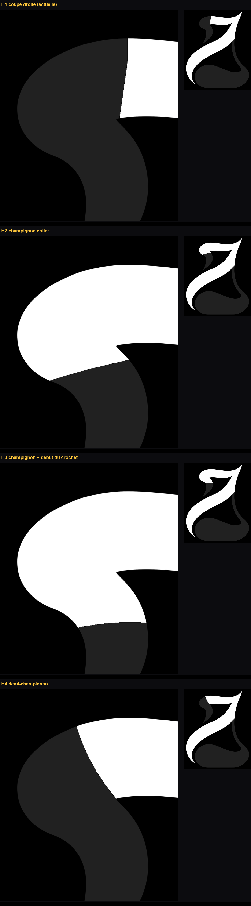
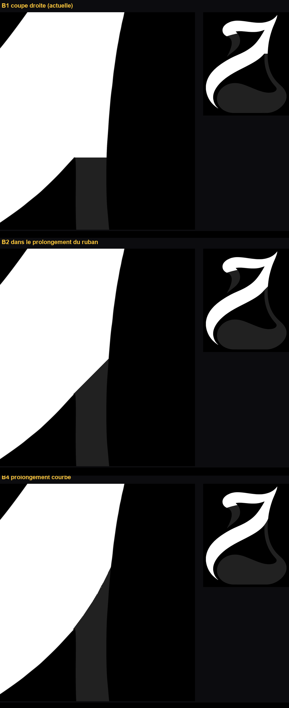

Forme de départ : le 7 seul
En blanc : ce qui apparaît en premier (le 7). En gris foncé : le reste du logo, qui viendra après. À gauche, un zoom sur la coupe ; à droite, le 7 entier. Dis-moi une coupe du haut (H1 à H4) et une coupe du bas (B1, B2 ou B4).
Coupe du haut (la dent)

Coupe du bas (le coin droit)
